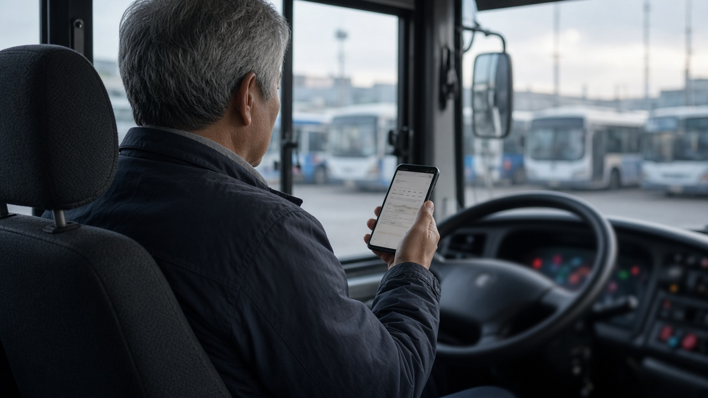

국민비서 알림 19종 추가, 개인통관고유부호 만료와 시민안전보험까지 앱으로 미리 받는 법
해외직구를 하려다 개인통관고유부호가 만료됐다는 안내를 보고 당황하셨거나, 동네에서 가입해 둔 시민안전보험이 있는지도 몰랐다는 이야기 들어 보셨을 거예요. 이런 놓치기 쉬운 행정 안내를 평소 쓰는 앱으로 알려 주는 국민비서 알림서비스가 알림 19종을 더 늘린다고 행정안전부가 11월 25일 밝혔습니다. 무엇이 새로 들어왔는지, 누가 챙기면 좋은지, 어떻게 신청하는지 차례로 정리해 볼게요.
국민비서 알림 19종 확대, 무엇이 달라졌나
국민비서는 정부와 공공기관이 보내는 행정 안내를 카카오톡이나 네이버앱 같은 민간 앱으로 받아 보게 해 주는 무료 알림서비스입니다. 2021년에 시작해 지금은 누적 회원이 1900만 명을 넘었다고 행정안전부가 밝혔어요.
이번에 새로 들어온 알림은 19종으로, 생활안전과 복지 문화, 생활 정보, 경제활동 분야에 고르게 걸쳐 있습니다. 이미 국민비서를 쓰고 계신 분도 새 항목은 따로 골라 신청해야 알림이 오니, 한 번 들어가서 목록을 확인해 보시는 게 좋아요.
해외직구족과 운전 일 하는 분이 먼저 챙길 알림

해외직구를 자주 하신다면 개인통관고유부호 유효기간 알림이 가장 반가울 겁니다. 관세청이 개인통관고유부호에 1년 유효기간을 두면서, 만료일과 갱신할 수 있는 기간을 미리 알려 주는 알림이 생겼어요. 주문 직전에 만료 사실을 알게 되는 일을 줄일 수 있습니다.
버스나 택시, 화물차를 모는 65세 이상 운수종사자라면 자격유지검사 대상 알림도 눈여겨보세요. 한국교통안전공단이 검사 기한이 다가오면 예약을 안내해 주는데, 65세에서 69세는 3년에 한 번, 70세 이상은 해마다 받아야 하는 검사라 날짜를 놓치지 않는 데 도움이 됩니다.
시민안전보험 안내도 새로 들어왔습니다. 지자체가 가입한 시민안전보험은 그 지역에 주소를 둔 주민이 자동으로 보장 대상이 되는 경우가 많은데, 막상 내 지역에 어떤 보장이 있는지는 따로 찾아보지 않으면 알기 어렵죠. 보장 항목과 금액, 청구 방법을 알려 준다고 하니 사고나 재난을 겪은 뒤 확인할 곳이 하나 더 생긴 셈입니다.
부모와 청년, 자영업자에게 쓸모 있는 알림
학부모라면 학교 수익자부담경비가 밀렸을 때 알려 주는 학교납부금 알림과, 자녀 학교에 상담을 신청하고 예약 결과를 받는 이어드림 알림이 있습니다. 저소득층 가구의 5세에서 18세 자녀나 5세에서 69세 등록 장애인이라면 스포츠강좌이용권 신청 기간 안내를 받을 수 있어요.
올해 19세와 20세 청년에게는 공연과 전시, 영화, 도서 관람비를 지원하는 청년문화예술패스 안내가 갑니다. 국민연금공단의 노후준비서비스 안내는 나이와 관계없이 신청할 수 있어요.
음식점이나 카페, 제과점을 운영하신다면 해마다 받아야 하는 식품위생교육 안내가 특히 쓸모 있습니다. 수입식품과 위생용품 영업자용 위생교육 알림도 따로 생겼고, 사업주는 고용보험과 산재보험 환급금이 계좌로 들어갔는지 알려 주는 알림도 받을 수 있어요. 식품 회수나 판매중지 같은 위해식품 정보도 실시간 알림으로 들어왔는데, 이건 식품안전나라에서 먼저 서비스를 신청해 둬야 알림이 옵니다.
신청은 어디서, 놓치지 않으려면 이것만 확인
신청은 국민비서 누리집이나 네이버앱, 카카오톡, 토스, 은행과 카드사 앱 등 21개 모바일 앱에서 할 수 있고 비용은 들지 않습니다. 올해는 이용할 수 있는 앱 3곳이 새로 추가됩니다. 평소 가장 자주 여는 앱 하나를 골라 거기서 받는 편이 알림을 놓치지 않는 데 유리합니다.
신청할 때는 받고 싶은 항목에 체크가 됐는지와 알림을 받을 앱이 맞게 지정됐는지 확인해 주세요. 행정안전부는 12월 13일까지 새 알림서비스를 신청한 사람 가운데 1000명을 뽑아 모바일 기프티콘을 주는 행사도 진행하고 있습니다. 다만 비슷한 이름으로 결제나 앱 설치를 요구하는 문자가 오면 바로 누르지 말고 공식 누리집에서 직접 확인하시는 게 안전해요.
참고 자료 행정안전부 2026년 11월 25일 국민비서 알림서비스 19종 확대 보도자료, 국민비서 누리집 서비스 안내, 연합뉴스 2026년 11월 25일 국민비서 알림 확대 기사
태그 국민비서 국민비서알림서비스 개인통관고유부호 유효기간 시민안전보험 운수종사자자격유지검사 청년문화예술패스 식품위생교육 정부알림 행정안전부